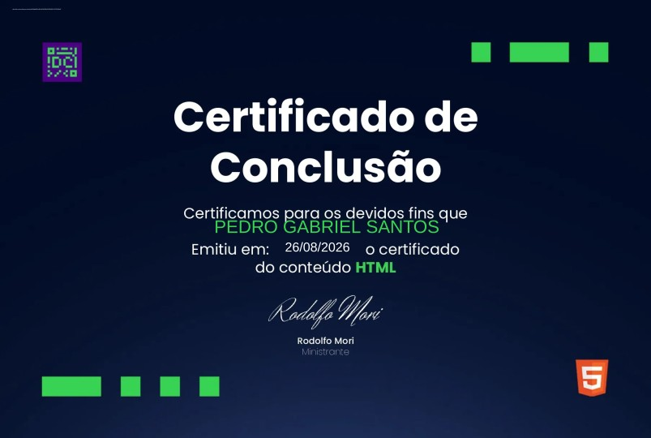

01 / Introdução
Pedro Gabriel Santos
Estudante Técnico em Tecnologia da Informação, com foco em desenvolvimento web front-end e back-end. Busco uma oportunidade de estágio para aplicar meus conhecimentos e continuar evoluindo.

01 / Introdução
Estudante Técnico em Tecnologia da Informação, com foco em desenvolvimento web front-end e back-end. Busco uma oportunidade de estágio para aplicar meus conhecimentos e continuar evoluindo.
Objetivo Profissional
Busco estágio em desenvolvimento web para contribuir com projetos, aplicar lógica de programação e ampliar minhas habilidades técnicas.
Competências em Destaque
HTML, CSS, JavaScript, React, Tailwind, Node.js e MySQL, com atenção à organização, proatividade e resolução de problemas.
Esta seção será atualizada com projetos pessoais e repositórios assim que estiverem organizados para apresentação pública.
03 / Biografia
Sou estudante do Ensino Médio Integrado ao Técnico em Tecnologia da Informação no Instituto Educacional Raphael di Santo. Tenho interesse em desenvolvimento web, tanto no front-end quanto no back-end, e busco oportunidades para colocar meus conhecimentos em prática.
Filosofia de Trabalho
Cursando Ensino Médio Integrado ao Técnico em Tecnologia da Informação no Instituto Educacional Raphael di Santo, com previsão de conclusão em 2027.

Habilidades Comportamentais
Proatividade, atenção aos detalhes, comunicação, organização, liderança, resolução de problemas e gestão do tempo.
Habilidades Técnicas
2 MESES
Gráfica
Apoio na organização e no controle da produção, demonstrando proatividade e atenção aos detalhes em ambiente de trabalho.
4 ANOS
Grupo de Escoteiros
Liderança e coordenação de equipes em projetos, desenvolvendo comunicação, resolução de problemas e gestão do tempo.
1,5 MÊS
Comércio varejista
Atendimento ao cliente e gestão de estoque, aprimorando comunicação, organização e proatividade.
07 / Comunicação
Estou disponível para novos projetos, propostas profissionais e colaborações técnicas.
08 / Documento